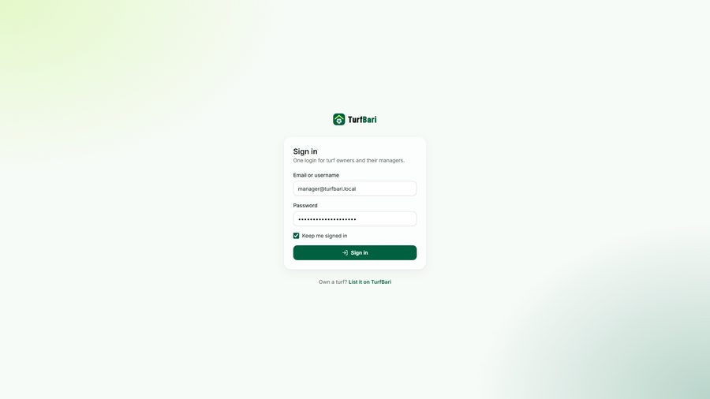

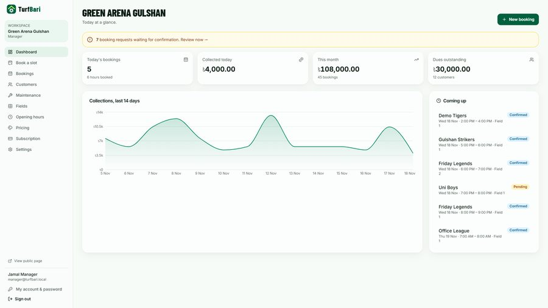
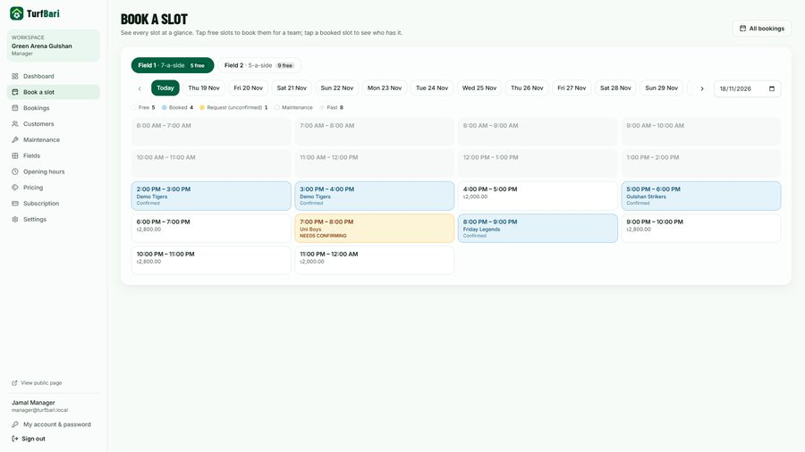
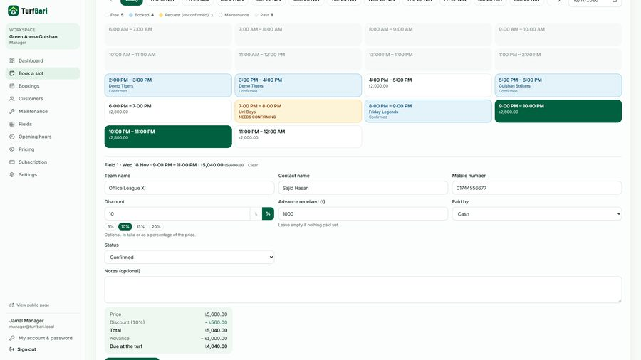
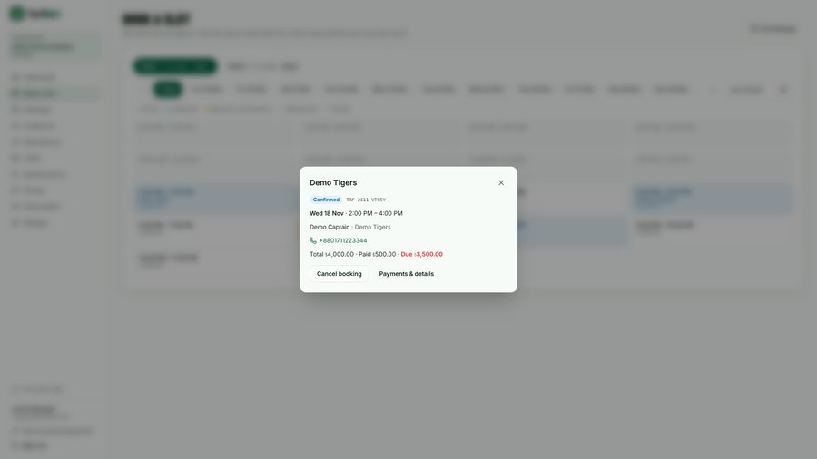
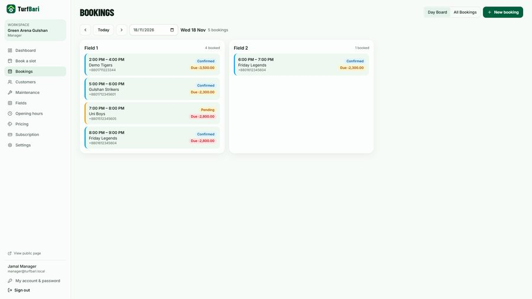
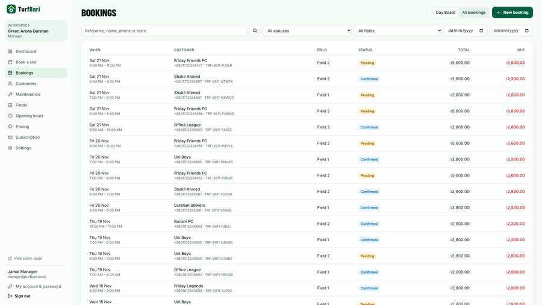
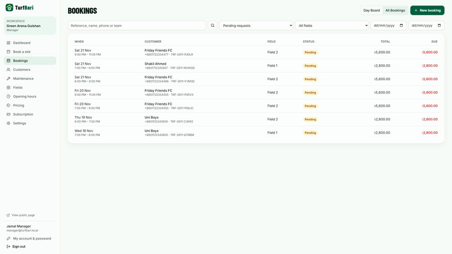
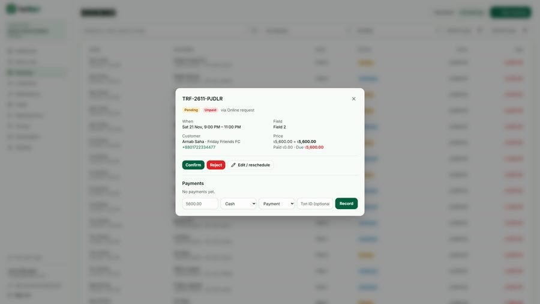
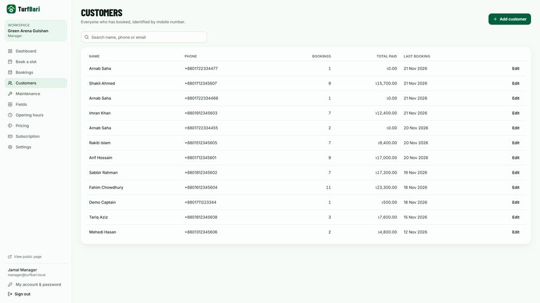
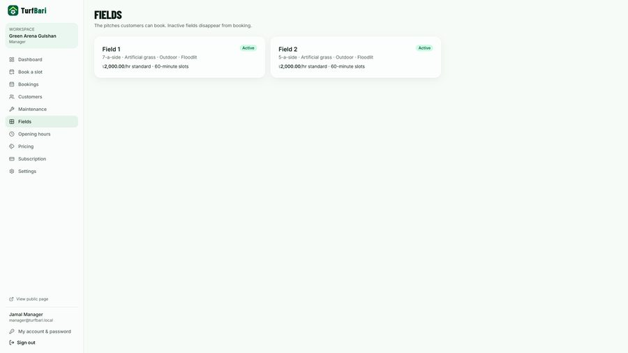
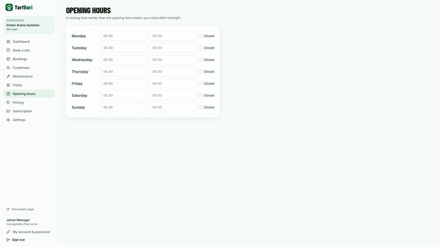

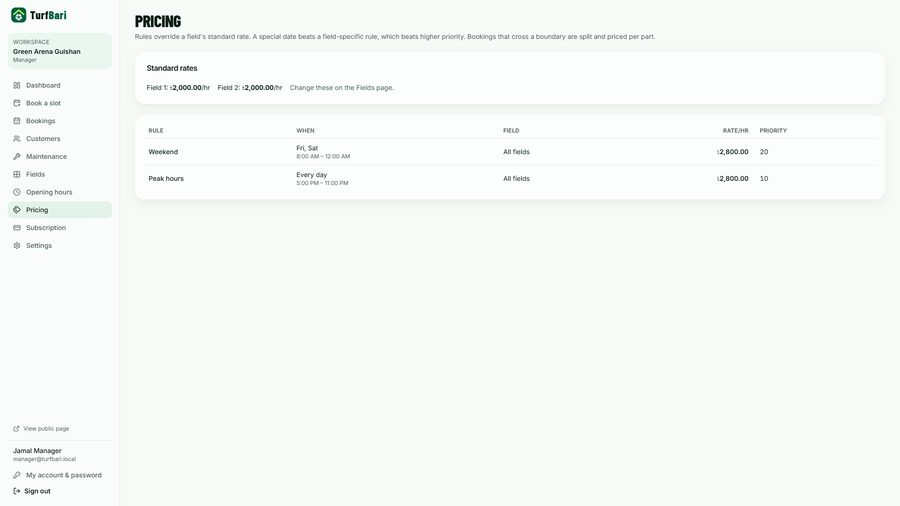
টার্ফবাড়ি — প্রতিটি টার্ফের ঠিকানা
Duration 3:35 · 1920×1080 · 30 fps · 100% Bengali voiceover
Audience: football teams, turf owners and managers · No admin content
Brief received as “TURFOS”; the product is now TurfBari — this guide uses the current brand.
Generated 18 Nov 2026 from the running application.
Logo: a বাড়ি (home) roof sheltering a football — “every turf's home”. Use only the files in 01-brand-assets/logo/.
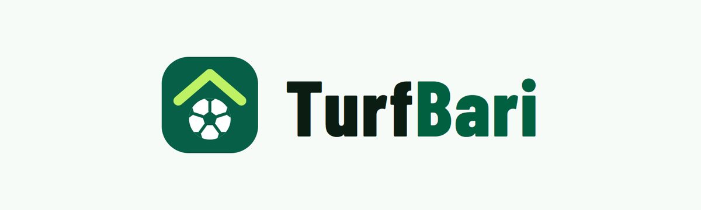
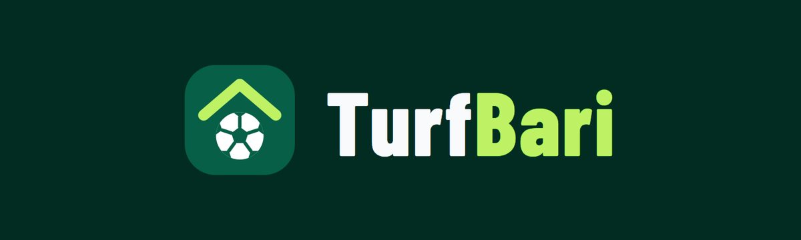
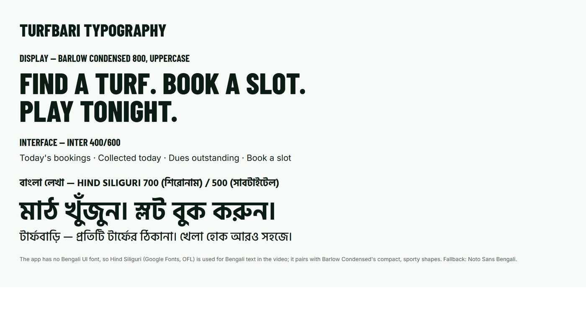
| Public website | Home with search and district filter; no account needed |
| Turf discovery | Explore with district / area / type / price / amenity filters, name search, sort; 'near me' with distance badges |
| Turf details | Cover photo, gallery + full-screen viewer, profile picture, amenities, fields, opening hours, price table, contact, Google Maps directions |
| QR code | Unique QR per turf that opens its booking page (shown on the turf page and in owner Settings, downloadable SVG) |
| Public booking | Pick field, date and free slots; send a request with name + mobile; status stays Pending until the turf confirms |
| Booking status | Look up a request with reference + mobile number |
| Owner dashboard | Today's bookings, collected today, this month, dues outstanding, 14-day collections chart, coming up, pending-requests banner |
| Book a slot board | Free / booked / request / maintenance per field and day; book a team with discount (৳ or %) and advance |
| Booking management | Day board and list, filters, confirm / reject / reschedule / cancel / no-show |
| Payments | Record payments and refunds per booking (cash, bKash, Nagad, Rocket, card, bank) with paid / due |
| Customers | Customer list with bookings count, total paid and last booking |
| Fields, hours, pricing | Fields, opening hours (incl. past midnight), peak / weekend / special-date pricing rules |
| Maintenance | Block a field for repairs |
| Expenses & reports | Expenses; reports with collected, expenses, net, bookings, daily chart, by field, by payment method, Excel export (owner only) |
| Team | Owner adds managers; each manager gets a separate login |
| Manager workspace | Dashboard, book a slot, bookings, confirm, record payments, customers, maintenance; fields / hours / pricing view-only |
| Public profile | Owner edits listing, photos, profile picture, Google Maps pin |
| Manager permissions | Fixed by role (not configurable per manager). The script says what the role can and can't do. |
| Activity log | Being built in a parallel session; not shown in the video until it is finished and tested. |
| Notification centre | Not built — only the dashboard's pending-requests banner exists. Not mentioned in the video. |
| Online payment by players | Not built — players don't pay online; staff record payments. The video never says 'pay online'. |
| Booking calendar (month view) | Not built — there is a day board and a list. The video says 'board', not 'calendar'. |
| SMS / email to players | Not built — the turf calls the player to confirm. The video says the turf confirms. |
| Customer / manager-activity reports | Not built — reports cover collections, expenses, fields and payment methods. |
দল রেডি, বুট রেডি, মনটাও রেডি। কিন্তু মাঠ কোথায়? কোন টার্ফে আজ রাতে সময় খালি, ভাড়া কত, কাকে ফোন করবেন—খুঁজতে খুঁজতেই সন্ধ্যা পেরিয়ে যায়। আর টার্ফ মালিকের দিন কাটে খাতা, একের পর এক ফোনকল আর বাকির হিসাব মেলাতে।
এই দুই দিকের ঝামেলা সহজ করতেই এসেছে টার্ফবাড়ি। খেলোয়াড়দের জন্য টার্ফ খোঁজা আর বুকিং রিকোয়েস্ট পাঠানো, আর মালিক ও ম্যানেজারদের জন্য পুরো টার্ফ ব্যবসা সামলানোর গোছানো ড্যাশবোর্ড—সব এক প্ল্যাটফর্মে। টার্ফবাড়ি—প্রতিটি টার্ফের ঠিকানা।
টার্ফবাড়ির ওয়েবসাইটে টার্ফ খুঁজতে কোনো অ্যাকাউন্ট লাগে না। লোকেশনের অনুমতি দিলেই আপনার সবচেয়ে কাছের টার্ফগুলো আগে দেখাবে, পাশে লেখা থাকবে কত দূরে। চাইলে জেলা আর এলাকা বেছে নিন, কিংবা টার্ফের নাম লিখে সার্চ করুন। প্রতিটি কার্ডে ছবি, ইনডোর না আউটডোর, কয়টি মাঠ আর ঘণ্টাপ্রতি শুরুর ভাড়া—একনজরেই। দশ জায়গায় ফোন করার দিন শেষ।
পছন্দের টার্ফে ঢুকলেই দেখবেন ছবির গ্যালারি, সুবিধাগুলো, মাঠের তথ্য, খোলার সময় আর প্রতিটি স্লটের ভাড়া। ম্যাপে এক ট্যাপেই পেয়ে যাবেন পৌঁছানোর রাস্তা। প্রতিটি টার্ফের আছে নিজস্ব QR কোড—স্ক্যান করলেই খুলে যায় সেই টার্ফের বুকিং পেজ। তারিখ, মাঠ আর খালি সময় বেছে নিন, নাম আর মোবাইল নম্বর দিয়ে পাঠিয়ে দিন বুকিং রিকোয়েস্ট। টার্ফ কর্তৃপক্ষ কনফার্ম করলেই খেলা পাকা; রেফারেন্স নম্বর দিয়ে যেকোনো সময় স্ট্যাটাসও দেখে নিতে পারবেন।
এবার টার্ফ মালিকের পালা। ড্যাশবোর্ডে আজকের বুকিং, আজকের আদায়, এই মাসের আয় আর মোট বকেয়া—সব একনজরে। বুক আ স্লট বোর্ডে দেখুন কোন সময় খালি, কোনটা বুকড, আর কোন রিকোয়েস্ট কনফার্মের অপেক্ষায়। ফোনে কোনো দল বুকিং চাইলে কয়েক সেকেন্ডেই নিয়ে নিন—ডিসকাউন্ট আর অগ্রিম টাকাসহ। মাঠ, খোলার সময়, পিক আওয়ার আর উইকেন্ডের ভাড়া, কাস্টমারের বুকিং ইতিহাস—সবকিছু থাকে গোছানো, খাতা ছাড়াই।
আর ম্যানেজার? মালিক টিম পেজ থেকে ম্যানেজার যুক্ত করলেই তিনি পান নিজের আলাদা লগইন। ম্যানেজার প্রতিদিনের বুকিং নেন, রিকোয়েস্ট কনফার্ম করেন, পেমেন্ট রেকর্ড করেন আর কাস্টমার সামলান। ভাড়া বদলানো, খরচ, রিপোর্ট আর টিম—এগুলো থাকে শুধু মালিকের হাতে। কাজ ভাগ হয়, নিয়ন্ত্রণ থাকে আপনার।
প্রতিটি বুকিংয়ে দেখা যায় মোট ভাড়া, কত টাকা পরিশোধ হয়েছে আর কত বাকি। ক্যাশ, বিকাশ বা নগদ—যেভাবেই টাকা আসুক, রেকর্ড থাকে বুকিংয়ের সঙ্গেই। রিপোর্টে দেখুন আদায়, খরচ আর নিট আয়, দিনভিত্তিক আদায়ের চার্ট, আর কোন মাঠে কত বুকিং। দরকার হলে এক ক্লিকে এক্সেলে ডাউনলোড।
খেলোয়াড়দের জন্য সহজে টার্ফ খোঁজা আর ঝামেলাহীন বুকিং রিকোয়েস্ট। মালিকের জন্য গোছানো ব্যবসা আর পরিষ্কার হিসাব। ম্যানেজারের জন্য স্পষ্ট দায়িত্ব। মাঠের বাইরের ঝামেলা কমলে, মাঠের ভেতরের আনন্দটাই বাড়ে।
আপনি টার্ফ মালিক হলে, আজই আপনার টার্ফ যুক্ত করুন টার্ফবাড়িতে। আর খেলতে ভালোবাসলে, খুঁজে নিন আপনার পরের ম্যাচের মাঠ। টার্ফবাড়ি—প্রতিটি টার্ফের ঠিকানা। খেলা হোক আরও সহজে।
| Scene | Length | Characters | Chars/s |
|---|---|---|---|
| 1 | 20 s | 210 | 10.5 |
| 2 | 18 s | 232 | 12.9 |
| 3 | 30 s | 322 | 10.7 |
| 4 | 30 s | 421 | 14.0 |
| 5 | 32 s | 370 | 11.6 |
| 6 | 25 s | 274 | 11.0 |
| 7 | 25 s | 260 | 10.4 |
| 8 | 18 s | 197 | 10.9 |
| 9 | 17 s | 168 | 9.9 |
দল রেডি, বুট রেডি, মনটাও রেডি। কিন্তু মাঠ কোথায়? কোন টার্ফে আজ রাতে সময় খালি, ভাড়া কত, কাকে ফোন করবেন—খুঁজতে খুঁজতেই সন্ধ্যা পেরিয়ে যায়। আর টার্ফ মালিকের দিন কাটে খাতা, একের পর এক ফোনকল আর বাকির হিসাব মেলাতে।
অন-স্ক্রিন লেখা: «দল রেডি। মাঠ কোথায়?» / «খাতা • ফোনকল • বাকির হিসাব»
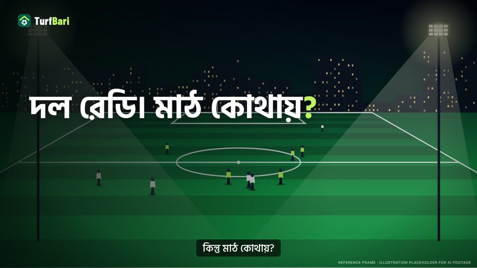
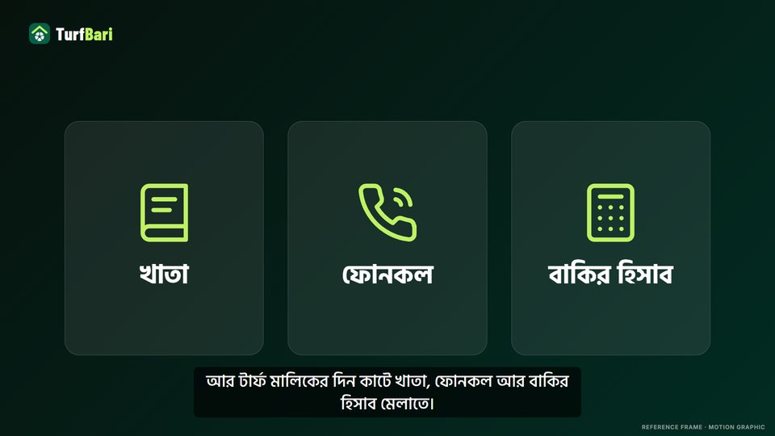
| Time | Visual direction | Real screenshot / asset |
|---|---|---|
| 0:00–0:05 | AI video VID-01: slow push-in on a floodlit night pitch, lights flicker on one by one. Kinetic text «দল রেডি। মাঠ কোথায়?» slams in on the beat. | — |
| 0:05–0:13 | AI video VID-02: friends at a tea stall scrolling phones, one makes a call, shrugs. Quick cuts (1–1.5 s). | — |
| 0:13–0:20 | AI image IMG-03 with slow Ken Burns: turf counter at night — paper ledger, ringing phone, calculator. Text «খাতা • ফোনকল • বাকির হিসাব» types on, each word with a soft tick. | — |
Transition: Whip-pan blur into a lime light-sweep that reveals the logo (Scene 2).
Audio: Music starts with a filtered pulse (−18 dB), crowd ambience low; one bass hit on «মাঠ কোথায়?».
এই দুই দিকের ঝামেলা সহজ করতেই এসেছে টার্ফবাড়ি। খেলোয়াড়দের জন্য টার্ফ খোঁজা আর বুকিং রিকোয়েস্ট পাঠানো, আর মালিক ও ম্যানেজারদের জন্য পুরো টার্ফ ব্যবসা সামলানোর গোছানো ড্যাশবোর্ড—সব এক প্ল্যাটফর্মে। টার্ফবাড়ি—প্রতিটি টার্ফের ঠিকানা।
অন-স্ক্রিন লেখা: «টার্ফবাড়ি» / «প্রতিটি টার্ফের ঠিকানা» / «খেলোয়াড় • মালিক • ম্যানেজার»
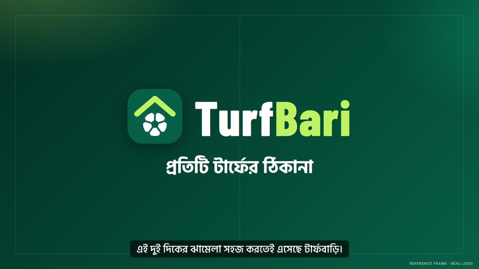
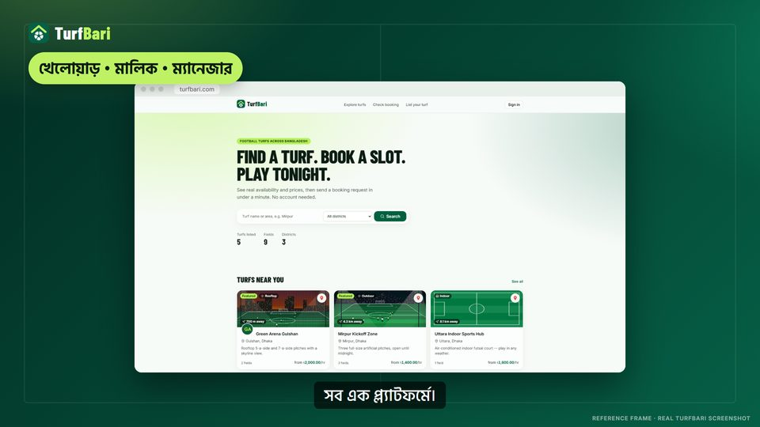
| Time | Visual direction | Real screenshot / asset |
|---|---|---|
| 0:20–0:26 | Logo reveal on brand background: lime roof draws on (stroke animation), ball drops in and bounces once, wordmark «TurfBari» slides out from the mark. | 01-brand-assets/logo/turfbari-mark.svg |
| 0:26–0:34 | Real homepage in a browser frame; slow dolly-in on the hero headline and search bar. | 02-real-app-screenshots/public-homepage/01-home-hero.png |
| 0:34–0:38 | Three chips pop up: খেলোয়াড় • মালিক • ম্যানেজার, then tagline lock-up. | — |
Transition: Zoom-through the search bar into the Explore page.
Audio: Music opens up to full beat at the logo (−14 dB under VO). Logo whoosh + soft ball bounce SFX.
টার্ফবাড়ির ওয়েবসাইটে টার্ফ খুঁজতে কোনো অ্যাকাউন্ট লাগে না। লোকেশনের অনুমতি দিলেই আপনার সবচেয়ে কাছের টার্ফগুলো আগে দেখাবে, পাশে লেখা থাকবে কত দূরে। চাইলে জেলা আর এলাকা বেছে নিন, কিংবা টার্ফের নাম লিখে সার্চ করুন। প্রতিটি কার্ডে ছবি, ইনডোর না আউটডোর, কয়টি মাঠ আর ঘণ্টাপ্রতি শুরুর ভাড়া—একনজরেই। দশ জায়গায় ফোন করার দিন শেষ।
অন-স্ক্রিন লেখা: «অ্যাকাউন্ট ছাড়াই টার্ফ খুঁজুন» / «কাছের টার্ফ আগে — দূরত্বসহ» / «জেলা • এলাকা • নাম দিয়ে সার্চ»
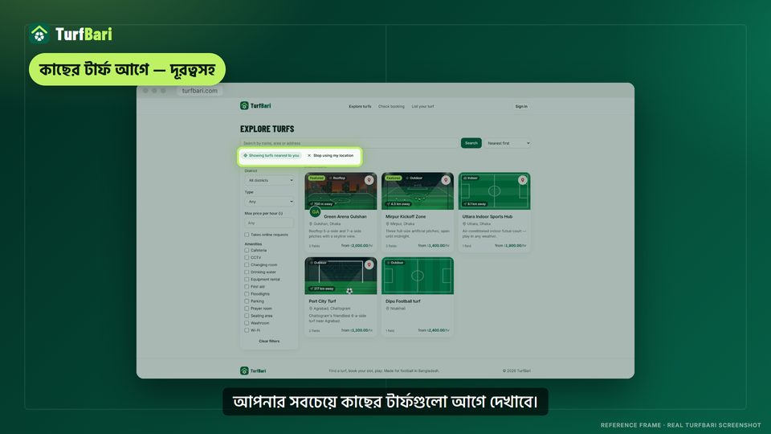
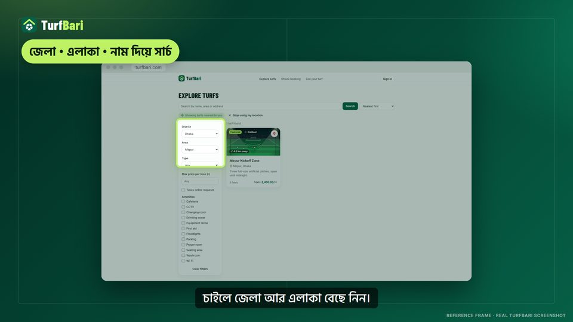
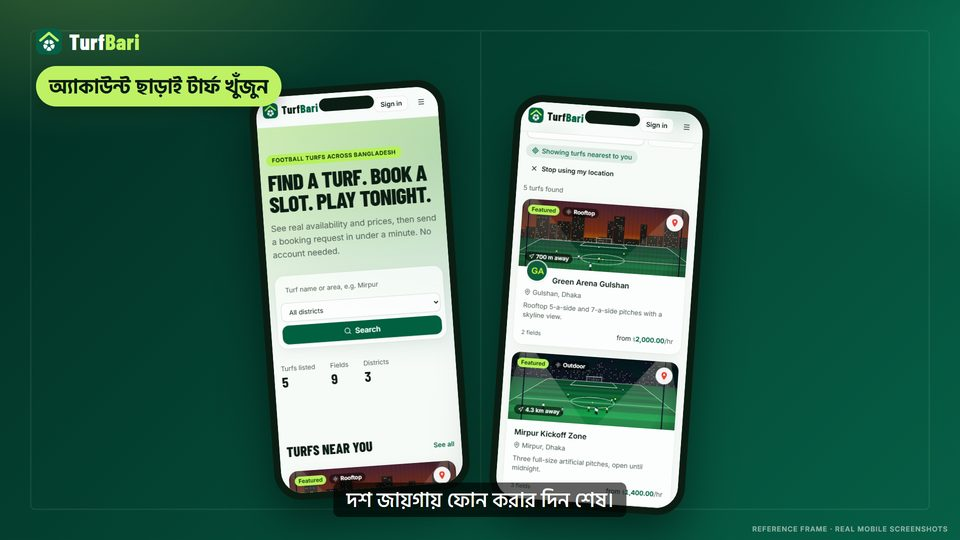
| Time | Visual direction | Real screenshot / asset |
|---|---|---|
| 0:38–0:46 | Explore page «Nearest first». Animate the «Showing turfs nearest to you» chip with a lime pulse; zoom on the «700 m away» badge. | 02-real-app-screenshots/turf-discovery/01-explore-nearest-first.png |
| 0:46–0:54 | District filter then area filter (cross-dissolve between the two real screens); animated cursor clicks the District select. | 02-real-app-screenshots/turf-discovery/02-explore-district-filter.png 02-real-app-screenshots/turf-discovery/03-explore-district-area-filter.png |
| 0:54–0:60 | Search by name «Uttara» — type-on effect in the search box, results appear. | 02-real-app-screenshots/turf-discovery/04-explore-search-by-name.png |
| 0:60–1:08 | Phone mock-up: mobile Explore scrolling; turf cards stagger in (80 ms apart). | 02-real-app-screenshots/turf-discovery/06-mobile-explore.png |
Transition: Card-expand: the Green Arena card scales up into its turf page.
Audio: Soft UI clicks on each filter; light «tick» per card reveal (−24 dB).
পছন্দের টার্ফে ঢুকলেই দেখবেন ছবির গ্যালারি, সুবিধাগুলো, মাঠের তথ্য, খোলার সময় আর প্রতিটি স্লটের ভাড়া। ম্যাপে এক ট্যাপেই পেয়ে যাবেন পৌঁছানোর রাস্তা। প্রতিটি টার্ফের আছে নিজস্ব QR কোড—স্ক্যান করলেই খুলে যায় সেই টার্ফের বুকিং পেজ। তারিখ, মাঠ আর খালি সময় বেছে নিন, নাম আর মোবাইল নম্বর দিয়ে পাঠিয়ে দিন বুকিং রিকোয়েস্ট। টার্ফ কর্তৃপক্ষ কনফার্ম করলেই খেলা পাকা; রেফারেন্স নম্বর দিয়ে যেকোনো সময় স্ট্যাটাসও দেখে নিতে পারবেন।
অন-স্ক্রিন লেখা: «ছবি • সুবিধা • খোলার সময় • ভাড়া» / «প্রতিটি টার্ফের নিজস্ব QR কোড» / «রিকোয়েস্ট পাঠান → টার্ফ কনফার্ম করবে»
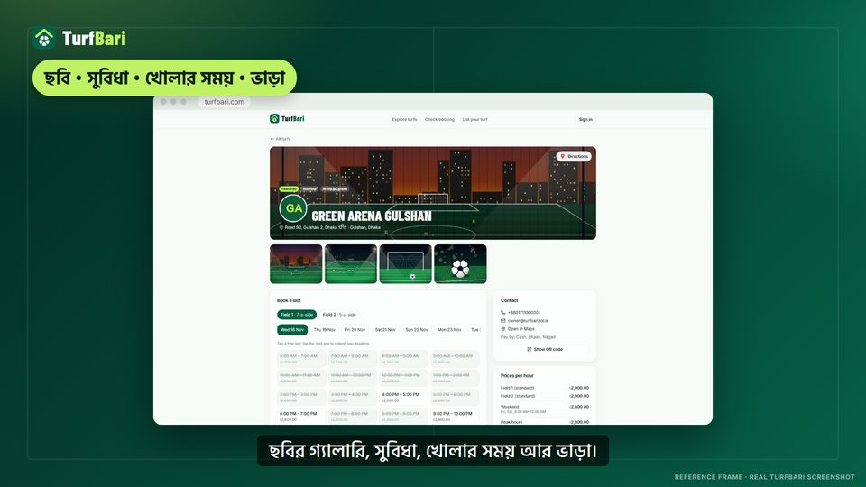
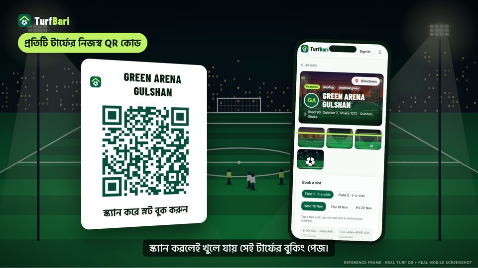
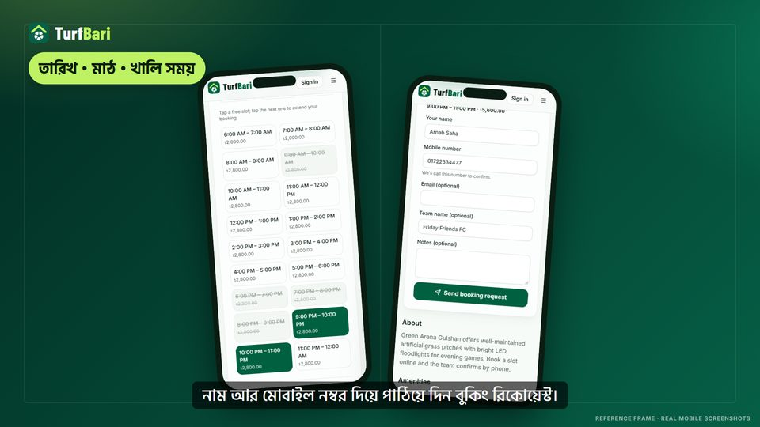
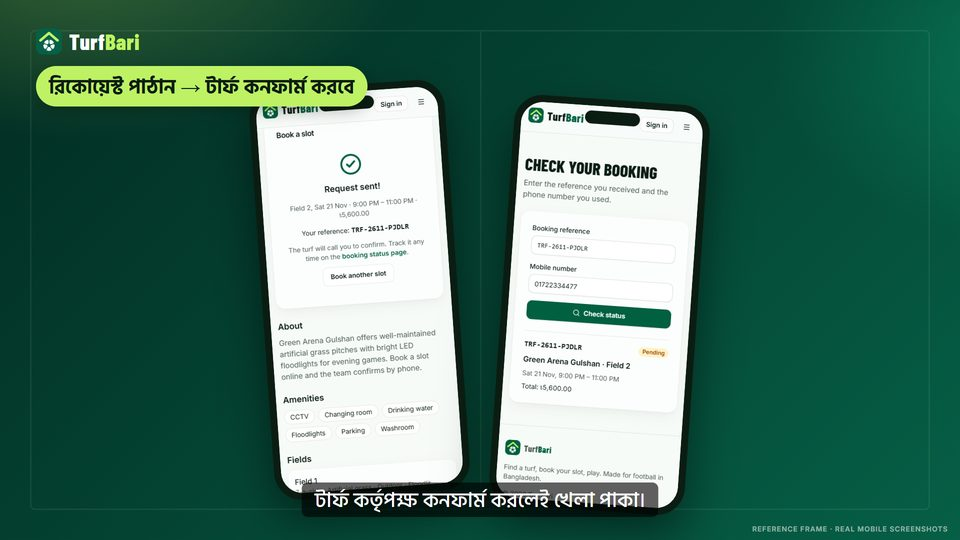
| Time | Visual direction | Real screenshot / asset |
|---|---|---|
| 1:08–1:16 | Turf page: cover photo, gallery strip; open the gallery viewer (real lightbox screenshot). | 02-real-app-screenshots/turf-details/01-turf-cover-gallery.png 02-real-app-screenshots/turf-details/06-gallery-viewer.png |
| 1:16–1:20 | Prices & opening hours panel slides in; lime highlight on «Prices per hour». Tap «Directions». | 02-real-app-screenshots/turf-details/04-turf-prices-hours.png |
| 1:20–1:26 | QR standee at the turf gate (reference frame s04-b uses the REAL QR). AI video VID-05: phone scans it; light sweep across the code; cut to the phone screen. | 02-real-app-screenshots/qr-booking/00-real-turf-qr-code.svg 02-real-app-screenshots/turf-details/07-turf-qr-code.png |
| 1:26–1:34 | Phone mock-up sequence: field + date → two evening slots tapped → form filled. | 02-real-app-screenshots/qr-booking/02-mobile-pick-field-and-date.png 02-real-app-screenshots/qr-booking/03-mobile-pick-time-slots.png 02-real-app-screenshots/qr-booking/04-mobile-booking-form.png |
| 1:34–1:38 | «Request sent!» with reference, then the status page showing «Pending». | 02-real-app-screenshots/qr-booking/05-mobile-request-sent.png 02-real-app-screenshots/qr-booking/07-booking-status-desktop.png |
Transition: Match-cut: the «Pending» badge on the player's phone becomes the pending-requests banner on the owner dashboard.
Audio: QR scan «bip» + short rising synth; tap sounds on slots; a gentle «ding» on Request sent.
এবার টার্ফ মালিকের পালা। ড্যাশবোর্ডে আজকের বুকিং, আজকের আদায়, এই মাসের আয় আর মোট বকেয়া—সব একনজরে। বুক আ স্লট বোর্ডে দেখুন কোন সময় খালি, কোনটা বুকড, আর কোন রিকোয়েস্ট কনফার্মের অপেক্ষায়। ফোনে কোনো দল বুকিং চাইলে কয়েক সেকেন্ডেই নিয়ে নিন—ডিসকাউন্ট আর অগ্রিম টাকাসহ। মাঠ, খোলার সময়, পিক আওয়ার আর উইকেন্ডের ভাড়া, কাস্টমারের বুকিং ইতিহাস—সবকিছু থাকে গোছানো, খাতা ছাড়াই।
অন-স্ক্রিন লেখা: «মালিকের ড্যাশবোর্ড» / «এক বোর্ডে সব স্লট» / «ডিসকাউন্ট ও অগ্রিমসহ বুকিং» / «মাঠ • সময় • ভাড়া • কাস্টমার»
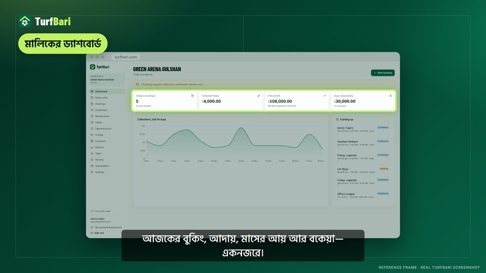
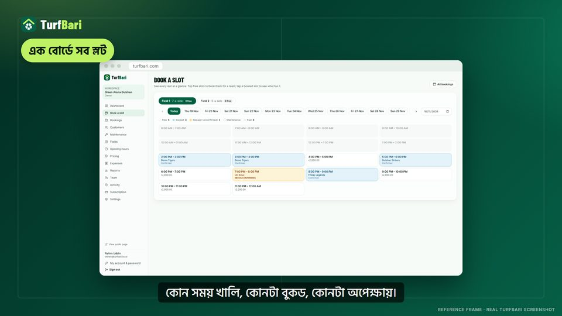
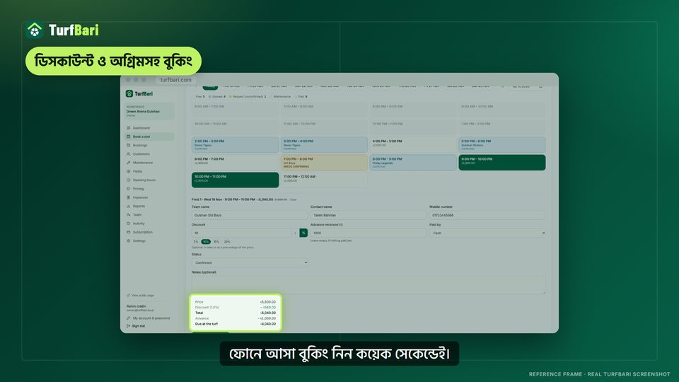
| Time | Visual direction | Real screenshot / asset |
|---|---|---|
| 1:38–1:46 | Owner dashboard. Count-up animation is NOT allowed on the real numbers — instead highlight each stat card in turn with a lime outline. Chart line draws on (mask reveal of the real chart). | 02-real-app-screenshots/owner-dashboard/01-dashboard.png |
| 1:46–1:54 | Book a slot board: colour legend callout (Free / Booked / Request / Maintenance). | 02-real-app-screenshots/booking-management/01-book-a-slot-board.png |
| 1:54–2:02 | Two slots selected, team details, 10% discount chip, price summary (real screen). | 02-real-app-screenshots/booking-management/02-book-team-with-discount.png |
| 2:02–2:10 | Quick montage, 2 s each: Fields → Opening hours → Pricing rules → Customers. | 02-real-app-screenshots/field-and-pricing/01-fields.png 02-real-app-screenshots/field-and-pricing/02-opening-hours.png 02-real-app-screenshots/field-and-pricing/03-pricing-rules.png 02-real-app-screenshots/customer-management/01-customers.png |
Transition: Slide the sidebar: the owner sidebar morphs into the shorter manager sidebar.
Audio: Music steady; subtle keyboard/typing SFX under the booking form; click on the 10% chip.
আর ম্যানেজার? মালিক টিম পেজ থেকে ম্যানেজার যুক্ত করলেই তিনি পান নিজের আলাদা লগইন। ম্যানেজার প্রতিদিনের বুকিং নেন, রিকোয়েস্ট কনফার্ম করেন, পেমেন্ট রেকর্ড করেন আর কাস্টমার সামলান। ভাড়া বদলানো, খরচ, রিপোর্ট আর টিম—এগুলো থাকে শুধু মালিকের হাতে। কাজ ভাগ হয়, নিয়ন্ত্রণ থাকে আপনার।
অন-স্ক্রিন লেখা: «ম্যানেজারের আলাদা লগইন» / «বুকিং • কনফার্ম • পেমেন্ট • কাস্টমার» / «ভাড়া, খরচ, রিপোর্ট — শুধু মালিকের হাতে»
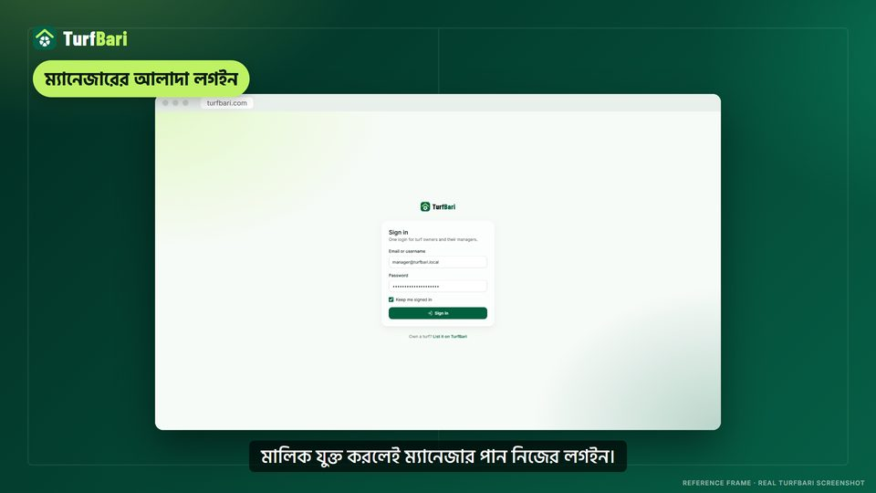
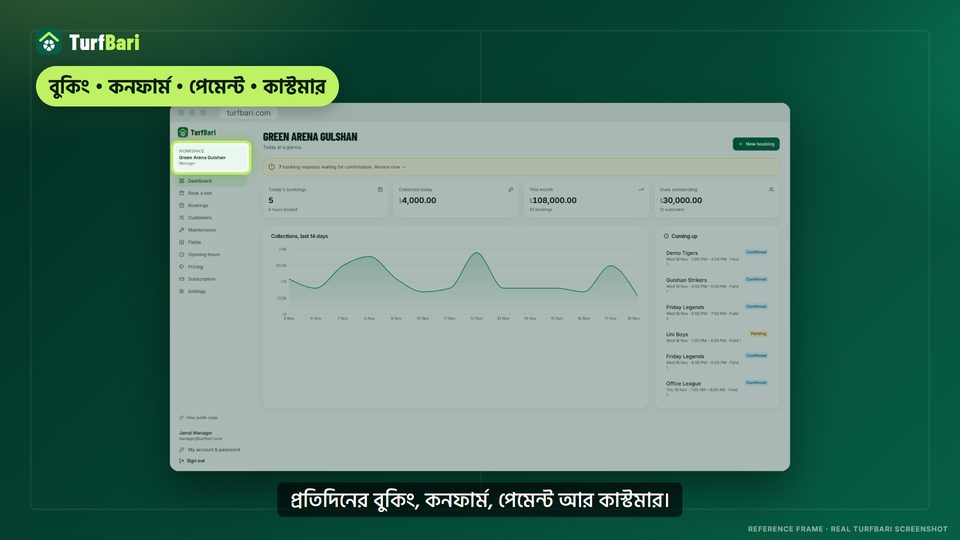
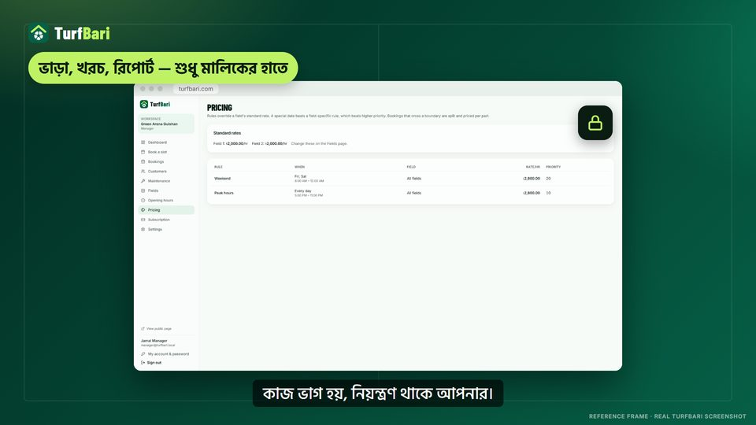
| Time | Visual direction | Real screenshot / asset |
|---|---|---|
| 2:10–2:15 | Owner's Team page (add manager), then the manager login screen. | 02-real-app-screenshots/owner-dashboard/03-team-managers.png 02-real-app-screenshots/manager-dashboard/00-manager-login.png |
| 2:15–2:22 | Manager dashboard — circle the «Manager» role label and the shorter sidebar (no Expenses / Reports / Team). | 02-real-app-screenshots/manager-dashboard/01-manager-dashboard.png |
| 2:22–2:30 | Manager confirms a pending request and records a payment (real booking dialog). | 02-real-app-screenshots/manager-dashboard/09-manager-booking-details-and-payments.png 02-real-app-screenshots/manager-dashboard/03-manager-book-a-slot-board.png |
| 2:30–2:35 | Manager's Pricing page is view-only (no «Add rule» button) — show with a lock icon overlay. | 02-real-app-screenshots/manager-dashboard/15-manager-pricing-view-only.png |
Transition: Push transition upward into the payments panel.
Audio: Small «lock» click on the view-only shot. VO slightly warmer on «নিয়ন্ত্রণ থাকে আপনার».
প্রতিটি বুকিংয়ে দেখা যায় মোট ভাড়া, কত টাকা পরিশোধ হয়েছে আর কত বাকি। ক্যাশ, বিকাশ বা নগদ—যেভাবেই টাকা আসুক, রেকর্ড থাকে বুকিংয়ের সঙ্গেই। রিপোর্টে দেখুন আদায়, খরচ আর নিট আয়, দিনভিত্তিক আদায়ের চার্ট, আর কোন মাঠে কত বুকিং। দরকার হলে এক ক্লিকে এক্সেলে ডাউনলোড।
অন-স্ক্রিন লেখা: «পরিশোধ • বাকি • পেমেন্টের মাধ্যম» / «আদায় • খরচ • নিট আয়» / «এক ক্লিকে এক্সেল»
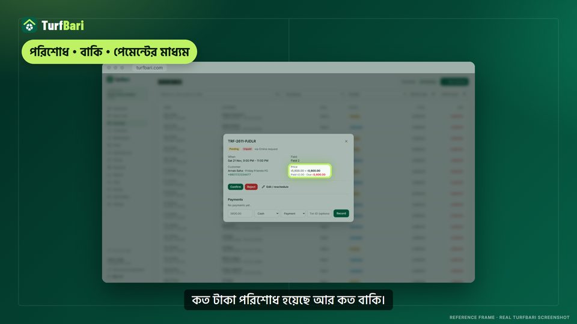
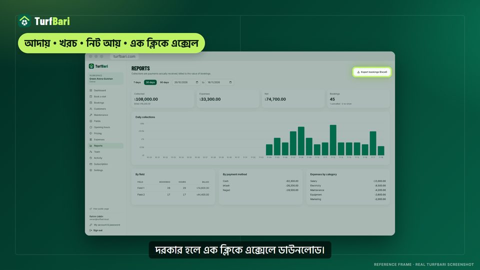
| Time | Visual direction | Real screenshot / asset |
|---|---|---|
| 2:35–2:43 | Booking dialog: zoom on «Paid ৳0.00 · Due ৳5,600.00» and the payment row (Cash / bKash / Nagad). | 02-real-app-screenshots/payment-management/01-booking-details-and-payments.png |
| 2:43–2:55 | Reports: the real bar chart builds left-to-right (mask wipe, no altered values); then By field and By payment method tables slide up. | 02-real-app-screenshots/reports/01-reports-overview.png |
| 2:55–3:00 | Cursor clicks «Export bookings (Excel)»; an .xlsx icon drops into a Downloads tray. | 02-real-app-screenshots/reports/01-reports-overview.png |
Transition: Pull back from the screen to a cinematic shot (VID-06 owner smiling at laptop).
Audio: Cash-register «ka-ching» is too loud for this brand — use a soft coin chime (−22 dB). Paper-swoosh on the export.
খেলোয়াড়দের জন্য সহজে টার্ফ খোঁজা আর ঝামেলাহীন বুকিং রিকোয়েস্ট। মালিকের জন্য গোছানো ব্যবসা আর পরিষ্কার হিসাব। ম্যানেজারের জন্য স্পষ্ট দায়িত্ব। মাঠের বাইরের ঝামেলা কমলে, মাঠের ভেতরের আনন্দটাই বাড়ে।
অন-স্ক্রিন লেখা: «খেলোয়াড় — সহজ খোঁজা, সহজ রিকোয়েস্ট» / «মালিক — গোছানো ব্যবসা» / «ম্যানেজার — স্পষ্ট দায়িত্ব»
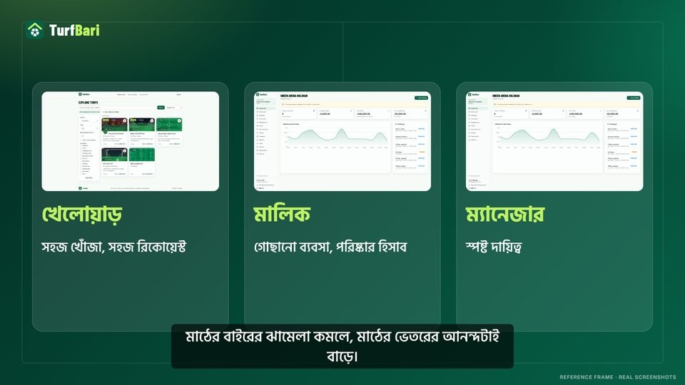
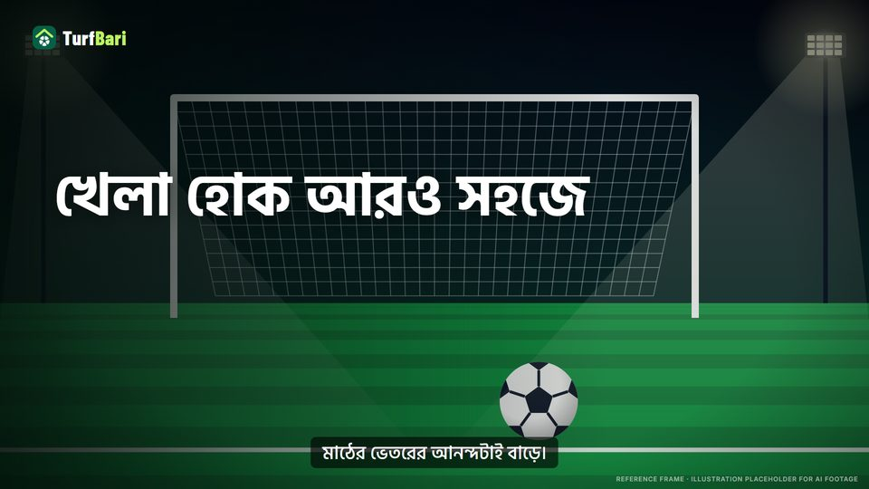
| Time | Visual direction | Real screenshot / asset |
|---|---|---|
| 3:00–3:10 | Triptych: three glass cards (Player / Owner / Manager) each with a real mini-screenshot; cards flip in one after another. | 02-real-app-screenshots/turf-discovery/05-mobile-home.png 02-real-app-screenshots/owner-dashboard/01-dashboard.png 02-real-app-screenshots/manager-dashboard/01-manager-dashboard.png |
| 3:10–3:18 | AI video VID-03 / IMG-08: goal celebration under floodlights, slow motion, lime flare. | — |
Transition: Flash to white-lime then cut to the brand background.
Audio: Music builds; crowd cheer swells under the last line, then drops for the CTA.
আপনি টার্ফ মালিক হলে, আজই আপনার টার্ফ যুক্ত করুন টার্ফবাড়িতে। আর খেলতে ভালোবাসলে, খুঁজে নিন আপনার পরের ম্যাচের মাঠ। টার্ফবাড়ি—প্রতিটি টার্ফের ঠিকানা। খেলা হোক আরও সহজে।
অন-স্ক্রিন লেখা: «আপনার টার্ফ যুক্ত করুন» / «টার্ফ খুঁজুন» / «টার্ফবাড়ি — প্রতিটি টার্ফের ঠিকানা» / «turfbari.com»
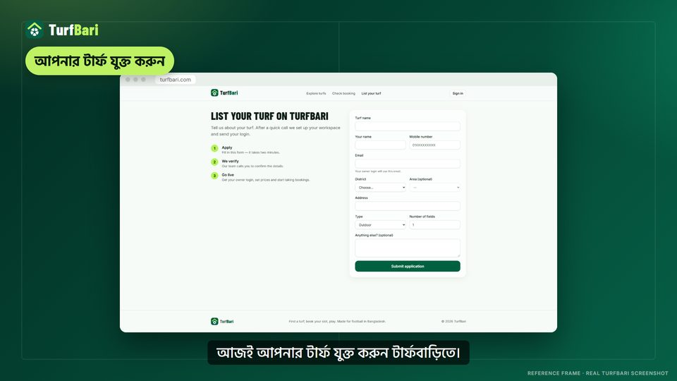
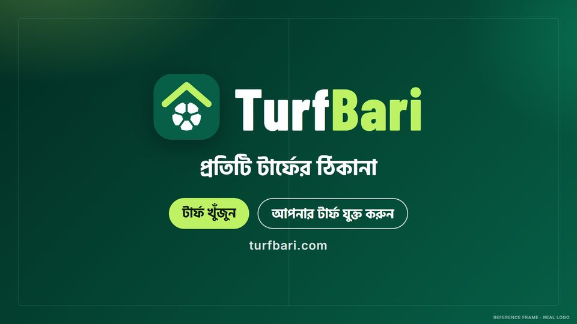
| Time | Visual direction | Real screenshot / asset |
|---|---|---|
| 3:18–3:26 | Real «List your turf» page in a browser frame, then the Explore page — CTA buttons pulse once. | 02-real-app-screenshots/public-homepage/05-register-your-turf.png 02-real-app-screenshots/turf-discovery/01-explore-nearest-first.png |
| 3:26–3:35 | End card: logo lock-up centred, tagline below, two CTA pills «টার্ফ খুঁজুন» and «আপনার টার্ফ যুক্ত করুন», URL at the bottom. Hold 4 s, fade to black. | 01-brand-assets/logo/turfbari-logo-horizontal-on-dark.png |
Transition: Fade to black (1 s).
Audio: Music resolves on the tagline; final logo sting (single bass + shimmer). Silence for the last 0.5 s.
Captured from the running app (public site, owner and manager workspaces). Demo data. No admin screens.
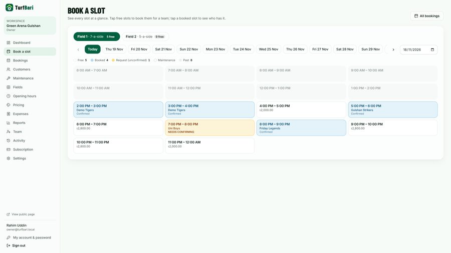
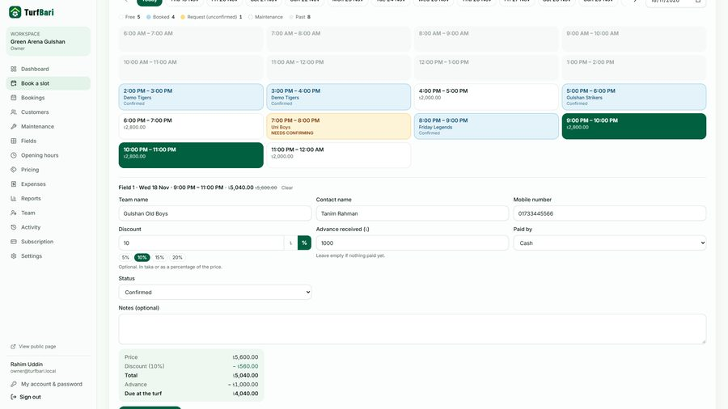
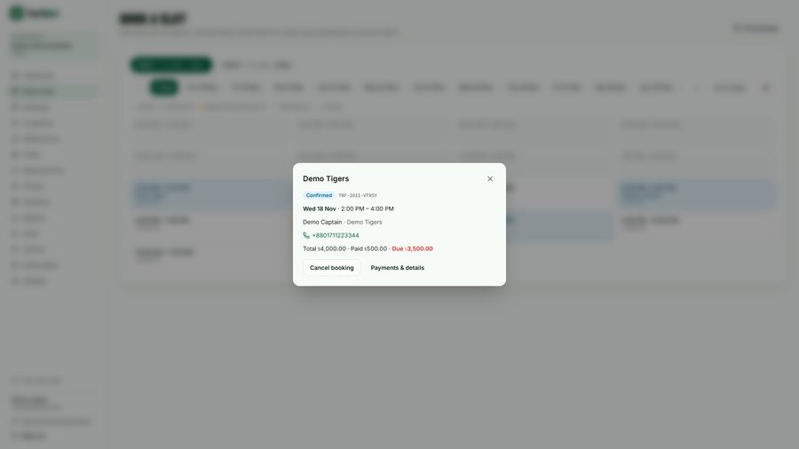
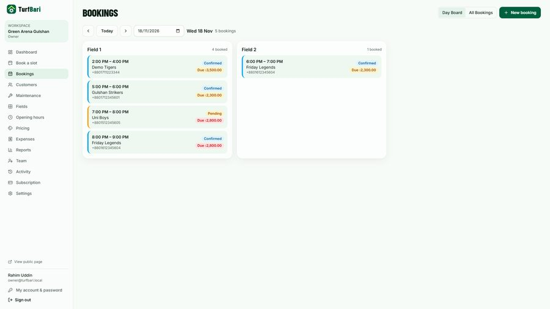
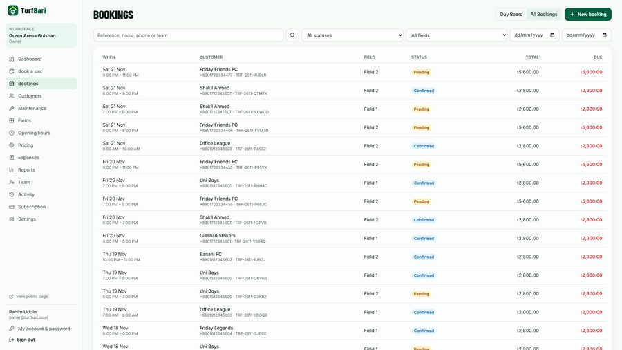
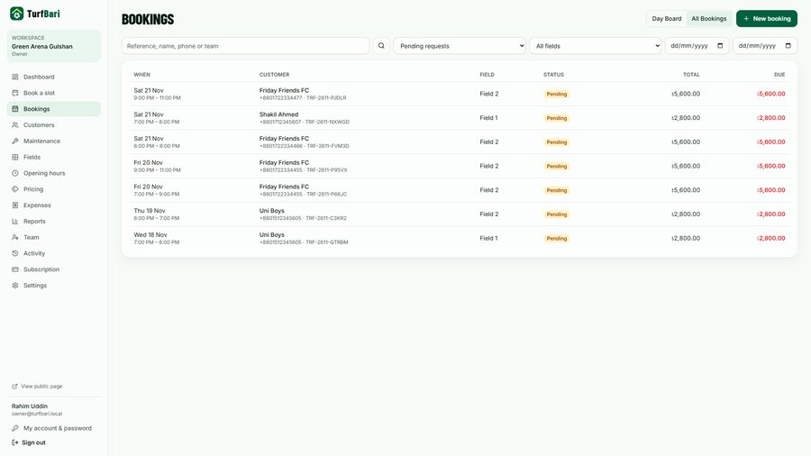
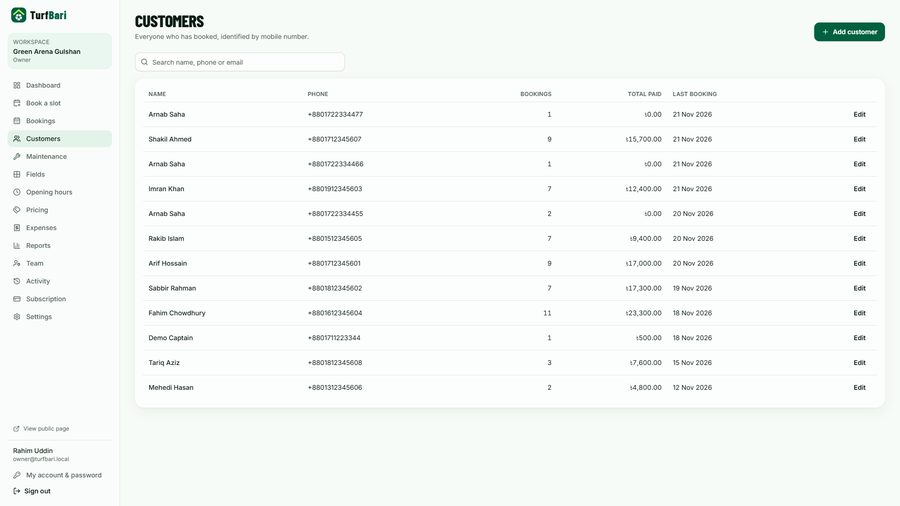
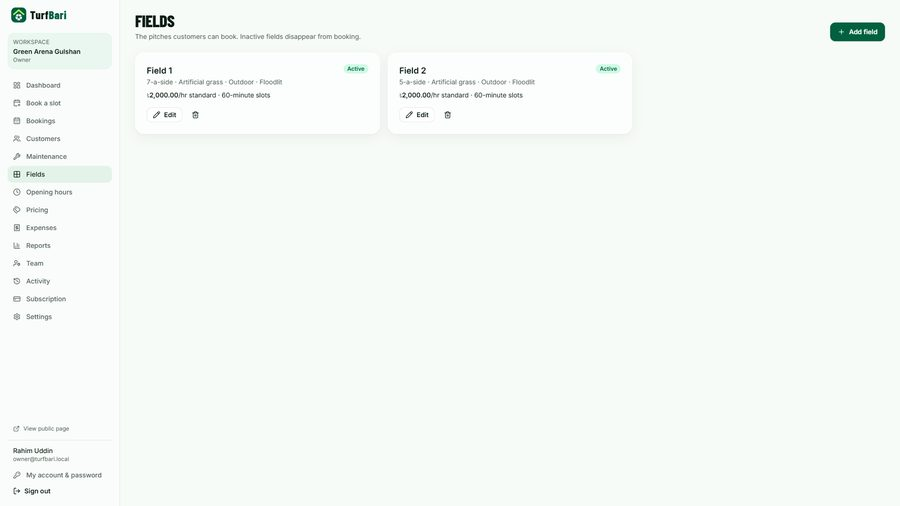
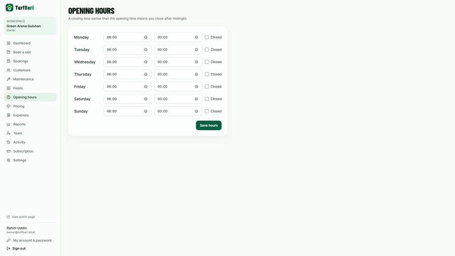
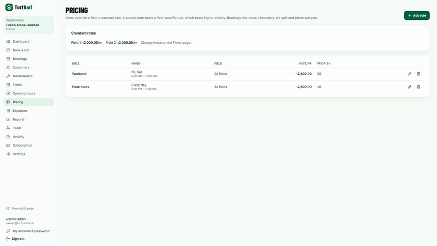
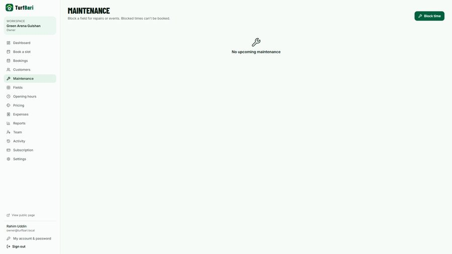















Negative prompt for all images: no text, no letters, no numbers, no logos, no brand marks, no watermarks, no readable signage, no QR codes, no app interfaces or UI on screens (screens must be blank or plain green for replacement), no distorted faces, no extra fingers, no warped hands, no cartoon style, no oversaturated neon, no stadium sponsor boards
An empty 7-a-side artificial-grass football turf in Dhaka at night, rooftop or fenced urban lot, goal in the centre background. Dense Dhaka skyline with lit apartment windows behind tall black netting; light rain haze in the air. Wide symmetrical shot from the halfway line, low height; goal on the vertical centre line, skyline across the top third, empty space top-left for Bengali title. Camera: Eye level 1.2 m, 24 mm lens, f/2.8, slight dutch tilt 0°. Lighting: Four LED floodlight towers, two already on and two flickering on, volumetric beams cutting through haze, wet turf reflections. Mood: Anticipation, about to play. Style: Cinematic photorealistic sports commercial, shallow grain. Colour palette locked to the TurfBari brand: deep emerald #065F46 / #006040, lime highlight #B6F259 / #BEF264, ink #0B1D13, mist white #F7FBF8; night scenes graded teal-green with warm sodium/LED floodlight whites. Aspect ratio 16:9 (1920×1080 or larger).
Five Bangladeshi friends in their 20s in football kits and joggers at a roadside tea stall, two holding phones, one on a call looking frustrated. Evening street in Dhaka, rickshaws softly blurred behind, warm tea-stall bulbs. Medium group shot, rule of thirds, phones visible but screens facing away from camera. Camera: Handheld feel, 35 mm, f/2, slight motion blur on background. Lighting: Warm tungsten from the stall mixed with cool street light; emerald-tinted shadows. Mood: Relatable everyday frustration, light-hearted. Style: Documentary-style photorealistic, natural skin tones. Colour palette locked to the TurfBari brand: deep emerald #065F46 / #006040, lime highlight #B6F259 / #BEF264, ink #0B1D13, mist white #F7FBF8; night scenes graded teal-green with warm sodium/LED floodlight whites. Aspect ratio 16:9.
A turf reception counter at night: open handwritten booking ledger with crossed-out times, a ringing feature phone, calculator, cash in a tray. Small office cabin beside the pitch; through the window the floodlit turf glows green. Top-down 30° angle close-up on the counter, ledger in the lower third, window light in the top right. Camera: 50 mm macro-ish, f/2.8, very shallow depth of field. Lighting: Single warm desk lamp, green spill from the turf outside. Mood: Overwhelmed, messy, analogue. Style: Photorealistic still life, cinematic. Colour palette locked to the TurfBari brand: deep emerald #065F46 / #006040, lime highlight #B6F259 / #BEF264, ink #0B1D13, mist white #F7FBF8; night scenes graded teal-green with warm sodium/LED floodlight whites. Handwriting must be illegible scribbles (no real words or numbers). Aspect ratio 16:9.
A modern acrylic table standee or wall plate at a turf gate, with a large BLANK white square panel where a QR code will be composited in post. Turf entrance with black netting, floodlit pitch softly out of focus behind. Standee on the right third facing the camera at 15°, blank panel perfectly flat and unobstructed. Camera: Eye level, 50 mm, f/2. Lighting: Soft key from the left, floodlight bokeh behind. Mood: Clean, modern, trustworthy. Style: Photorealistic product shot. Colour palette locked to the TurfBari brand: deep emerald #065F46 / #006040, lime highlight #B6F259 / #BEF264, ink #0B1D13, mist white #F7FBF8; night scenes graded teal-green with warm sodium/LED floodlight whites. Leave the panel pure white with crisp corners so the REAL QR (02-real-app-screenshots/qr-booking/00-real-turf-qr-code.svg) can be corner-pinned on top. Never let the AI draw a QR. Aspect ratio 16:9.
Close-up of a young player's hand holding a modern smartphone up to the standee; phone screen plain emerald green (#065F46) for screen replacement. Turf entrance at night, same standee as IMG-04. Over-the-shoulder, phone in the centre third, standee blurred behind the phone. Camera: 85 mm, f/1.8. Lighting: Phone screen glow on fingers, floodlight rim light. Mood: Quick, effortless. Style: Photorealistic commercial. Colour palette locked to the TurfBari brand: deep emerald #065F46 / #006040, lime highlight #B6F259 / #BEF264, ink #0B1D13, mist white #F7FBF8; night scenes graded teal-green with warm sodium/LED floodlight whites. Screen must be a flat uniform green, no UI, no reflections of text, so the real mobile screenshot can be tracked in. Aspect ratio 16:9.
Bangladeshi turf owner in his 40s, smart casual (panjabi or polo), smiling slightly while looking at a laptop on the reception desk; laptop screen faces away or shows plain green. Tidy turf reception with a small plant, window to the floodlit pitch. Medium shot from 45°, owner on the left third, pitch glow on the right. Camera: 35 mm, f/2.2. Lighting: Soft daylight-balanced key, green ambient from outside. Mood: In control, relaxed. Style: Photorealistic corporate-lifestyle. Colour palette locked to the TurfBari brand: deep emerald #065F46 / #006040, lime highlight #B6F259 / #BEF264, ink #0B1D13, mist white #F7FBF8; night scenes graded teal-green with warm sodium/LED floodlight whites. Aspect ratio 16:9.
Young turf manager (man or woman, 25–30) at pitch-side holding a tablet, talking to a team captain; tablet screen plain green. Turf sideline at dusk, players warming up behind. Two-shot, manager in focus foreground right, captain soft left. Camera: 50 mm, f/2. Lighting: Golden-hour key, floodlights just turning on. Mood: Organised, friendly, professional. Style: Photorealistic sports-lifestyle. Colour palette locked to the TurfBari brand: deep emerald #065F46 / #006040, lime highlight #B6F259 / #BEF264, ink #0B1D13, mist white #F7FBF8; night scenes graded teal-green with warm sodium/LED floodlight whites. Aspect ratio 16:9.
A player in a lime bib celebrating a goal with teammates running in, ball in the back of the net. Floodlit urban turf at night, light haze, net still moving. Low-angle wide, celebrating player centre-left, net and goal on the right. Camera: Low angle 0.5 m, 24 mm, f/2.8, 1/1000 s frozen motion. Lighting: Back-lit by floodlights, strong rim light, lime flare. Mood: Joy, release, togetherness. Style: Photorealistic sports commercial, high dynamic range. Colour palette locked to the TurfBari brand: deep emerald #065F46 / #006040, lime highlight #B6F259 / #BEF264, ink #0B1D13, mist white #F7FBF8; night scenes graded teal-green with warm sodium/LED floodlight whites. Aspect ratio 16:9.
Abstract top-down view of artificial turf blades with faint white pitch markings, soft emerald gradient. Studio-clean, no people. Even texture with darker vignette, clean centre for the logo. Camera: Top-down, 100 mm macro texture. Lighting: Soft diffused, slight lime glow top-left. Mood: Premium, calm. Style: Minimal photographic texture. Colour palette locked to the TurfBari brand: deep emerald #065F46 / #006040, lime highlight #B6F259 / #BEF264, ink #0B1D13, mist white #F7FBF8; night scenes graded teal-green with warm sodium/LED floodlight whites. Aspect ratio 16:9.
Drone view of a rooftop turf in a Bangladeshi city at blue hour, game in progress, tiny players. Surrounding rooftops, water tanks, distant lights. Top-down 70°, turf in the lower half, sky gradient upper half for logo and CTA. Camera: Drone 24 mm. Lighting: Blue hour + floodlights. Mood: Aspirational, city-wide. Style: Photorealistic aerial cinematic. Colour palette locked to the TurfBari brand: deep emerald #065F46 / #006040, lime highlight #B6F259 / #BEF264, ink #0B1D13, mist white #F7FBF8; night scenes graded teal-green with warm sodium/LED floodlight whites. Aspect ratio 16:9.
Negative prompt for all clips: no on-screen text, no subtitles, no logos or brand marks, no readable QR codes, no app interfaces, no warped faces or limbs, no morphing objects, no flicker artefacts, no fast shaky camera, no sponsor boards
Camera: Slow dolly-in at knee height from the halfway line towards the goal, 24 mm. Subject: Empty rooftop artificial turf at night; floodlights switch on one after another (left, right, left, right), beams catching drizzle. Lighting: Starts dark teal, ends with crisp white LED floodlight. Environment: Dhaka skyline with lit windows behind black netting. Grade: Teal-emerald shadows, neutral whites, lime accents in reflections; matches TurfBari palette.
Camera: Steadicam tracking backwards in front of the group, 35 mm. Subject: Five friends with a ball and kit bags walk through the turf gate laughing; one bounces the ball. Lighting: Floodlight back-light, warm street light front. Environment: Turf entrance with netting, stairs to a rooftop. Grade: Same teal-emerald grade as VID-01.
Camera: Slow arc around the manager, 50 mm, shallow depth. Subject: Manager at pitch-side taps a tablet (screen plain green for replacement) and gives a thumbs-up to an arriving team captain. Lighting: Dusk, floodlights warming up. Environment: Turf sideline, players warming up out of focus. Grade: Warm dusk into emerald night.
Camera: Push-in from medium to close-up, 35 mm → 50 mm. Subject: Turf owner at reception scrolls a laptop (screen faces away), nods with a relaxed smile, closes an old paper ledger and puts it aside. Lighting: Soft desk key, green spill from the pitch window. Environment: Tidy reception, pitch visible through the window. Grade: Neutral skin, emerald background.
Camera: Locked-off over-the-shoulder, 85 mm, rack focus from standee to phone. Subject: Hand raises a phone to a standee with a BLANK white panel; phone screen plain green; small haptic shake when it 'scans'. Lighting: Phone glow on fingers, floodlight bokeh. Environment: Turf gate at night. Grade: Emerald-teal, lime rim highlight. Composite the real QR on the standee and the real mobile screenshots on the phone in post.
Camera: Top-down macro moving forward over artificial turf blades. Subject: Turf blades become thin glowing lime light lines that form a grid (abstract data feel), no text. Lighting: Dark emerald base with lime light streaks. Environment: Abstract. Grade: Brand emerald #065F46 → lime #BEF264 glow.
Camera: Drone pull-back and rise from the centre circle of a rooftop turf at blue hour. Subject: Players freeze mid-play as the camera rises; city lights twinkle; the top half of frame clears to sky for the logo. Lighting: Blue hour + white floodlights. Environment: Bangladeshi city rooftops. Grade: Deep emerald sky gradient, lime highlights. Add the real logo (01-brand-assets/logo) in the edit — never generate the logo with AI.
Full guide: 09-editing-guide/editing-guide.md. Key rules:
| Start | Text |
|---|---|
| 00:00:00,350 | দল রেডি, বুট রেডি, মনটাও রেডি। |
| 00:00:03,364 | কিন্তু মাঠ কোথায়? |
| 00:00:05,533 | কোন টার্ফে আজ রাতে সময় খালি, ভাড়া কত, কাকে ফোন করবেন— |
| 00:00:10,309 | খুঁজতে খুঁজতেই সন্ধ্যা পেরিয়ে যায়। |
| 00:00:13,746 | আর টার্ফ মালিকের দিন কাটে খাতা, একের পর এক ফোনকল আর বাকির হিসাব মেলাতে। |
| 00:00:20,350 | এই দুই দিকের ঝামেলা সহজ করতেই এসেছে টার্ফবাড়ি। |
| 00:00:23,854 | খেলোয়াড়দের জন্য টার্ফ খোঁজা আর বুকিং রিকোয়েস্ট পাঠানো, |
| 00:00:27,913 | আর মালিক ও ম্যানেজারদের জন্য পুরো টার্ফ ব্যবসা সামলানোর গোছানো ড্যাশবোর্ড— |
| 00:00:32,913 | সব এক প্ল্যাটফর্মে। |
| 00:00:34,866 | টার্ফবাড়ি—প্রতিটি টার্ফের ঠিকানা। |
| 00:00:38,350 | টার্ফবাড়ির ওয়েবসাইটে টার্ফ খুঁজতে কোনো অ্যাকাউন্ট লাগে না। |
| 00:00:43,549 | লোকেশনের অনুমতি দিলেই আপনার সবচেয়ে কাছের টার্ফগুলো আগে দেখাবে, |
| 00:00:48,963 | পাশে লেখা থাকবে কত দূরে। |
| 00:00:51,583 | চাইলে জেলা আর এলাকা বেছে নিন, কিংবা টার্ফের নাম লিখে সার্চ করুন। |
| 00:00:57,068 | প্রতিটি কার্ডে ছবি, ইনডোর না আউটডোর, কয়টি মাঠ আর ঘণ্টাপ্রতি শুরুর ভাড়া— |
| 00:01:03,199 | একনজরেই। |
| 00:01:04,672 | দশ জায়গায় ফোন করার দিন শেষ। |
| 00:01:08,350 | পছন্দের টার্ফে ঢুকলেই দেখবেন ছবির গ্যালারি, সুবিধাগুলো, মাঠের তথ্য, |
| 00:01:12,792 | খোলার সময় আর প্রতিটি স্লটের ভাড়া। |
| 00:01:15,543 | ম্যাপে এক ট্যাপেই পেয়ে যাবেন পৌঁছানোর রাস্তা। |
| 00:01:18,875 | প্রতিটি টার্ফের আছে নিজস্ব QR কোড—স্ক্যান করলেই খুলে যায় সেই টার্ফের বুকিং পেজ। |
| 00:01:24,005 | তারিখ, মাঠ আর খালি সময় বেছে নিন, |
| 00:01:26,649 | নাম আর মোবাইল নম্বর দিয়ে পাঠিয়ে দিন বুকিং রিকোয়েস্ট। |
| 00:01:30,457 | টার্ফ কর্তৃপক্ষ কনফার্ম করলেই খেলা পাকা; |
| 00:01:33,472 | রেফারেন্স নম্বর দিয়ে যেকোনো সময় স্ট্যাটাসও দেখে নিতে পারবেন। |
| 00:01:38,350 | এবার টার্ফ মালিকের পালা। |
| 00:01:40,876 | ড্যাশবোর্ডে আজকের বুকিং, আজকের আদায়, এই মাসের আয় আর মোট বকেয়া—সব একনজরে। |
| 00:01:46,857 | বুক আ স্লট বোর্ডে দেখুন কোন সময় খালি, কোনটা বুকড, |
| 00:01:51,145 | আর কোন রিকোয়েস্ট কনফার্মের অপেক্ষায়। |
| 00:01:54,619 | ফোনে কোনো দল বুকিং চাইলে কয়েক সেকেন্ডেই নিয়ে নিন—ডিসকাউন্ট আর অগ্রিম টাকাসহ। |
| 00:02:00,804 | মাঠ, খোলার সময়, পিক আওয়ার আর উইকেন্ডের ভাড়া, কাস্টমারের বুকিং ইতিহাস— |
| 00:02:06,582 | সবকিছু থাকে গোছানো, খাতা ছাড়াই। |
| 00:02:10,350 | আর ম্যানেজার? |
| 00:02:12,150 | মালিক টিম পেজ থেকে ম্যানেজার যুক্ত করলেই তিনি পান নিজের আলাদা লগইন। |
| 00:02:17,688 | ম্যানেজার প্রতিদিনের বুকিং নেন, রিকোয়েস্ট কনফার্ম করেন, |
| 00:02:22,465 | পেমেন্ট রেকর্ড করেন আর কাস্টমার সামলান। |
| 00:02:26,065 | ভাড়া বদলানো, খরচ, রিপোর্ট আর টিম—এগুলো থাকে শুধু মালিকের হাতে। |
| 00:02:31,327 | কাজ ভাগ হয়, নিয়ন্ত্রণ থাকে আপনার। |
| 00:02:35,350 | প্রতিটি বুকিংয়ে দেখা যায় মোট ভাড়া, কত টাকা পরিশোধ হয়েছে আর কত বাকি। |
| 00:02:41,678 | ক্যাশ, বিকাশ বা নগদ—যেভাবেই টাকা আসুক, রেকর্ড থাকে বুকিংয়ের সঙ্গেই। |
| 00:02:47,776 | রিপোর্টে দেখুন আদায়, খরচ আর নিট আয়, দিনভিত্তিক আদায়ের চার্ট, |
| 00:02:53,492 | আর কোন মাঠে কত বুকিং। |
| 00:02:55,998 | দরকার হলে এক ক্লিকে এক্সেলে ডাউনলোড। |
| 00:03:00,350 | খেলোয়াড়দের জন্য সহজে টার্ফ খোঁজা আর ঝামেলাহীন বুকিং রিকোয়েস্ট। |
| 00:03:05,770 | মালিকের জন্য গোছানো ব্যবসা আর পরিষ্কার হিসাব। |
| 00:03:09,800 | ম্যানেজারের জন্য স্পষ্ট দায়িত্ব। |
| 00:03:12,995 | মাঠের বাইরের ঝামেলা কমলে, মাঠের ভেতরের আনন্দটাই বাড়ে। |
| 00:03:18,350 | আপনি টার্ফ মালিক হলে, আজই আপনার টার্ফ যুক্ত করুন টার্ফবাড়িতে। |
| 00:03:24,269 | আর খেলতে ভালোবাসলে, খুঁজে নিন আপনার পরের ম্যাচের মাঠ। |
| 00:03:29,460 | টার্ফবাড়ি—প্রতিটি টার্ফের ঠিকানা। খেলা হোক আরও সহজে। |